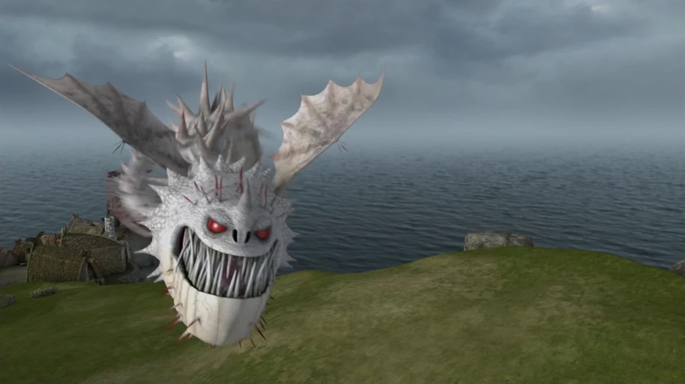
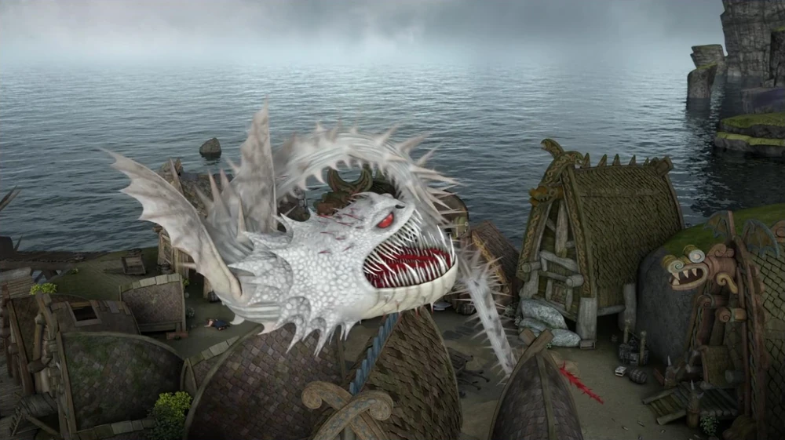
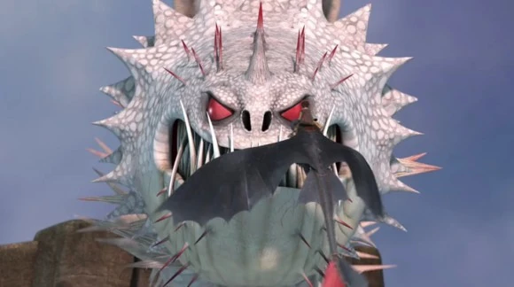
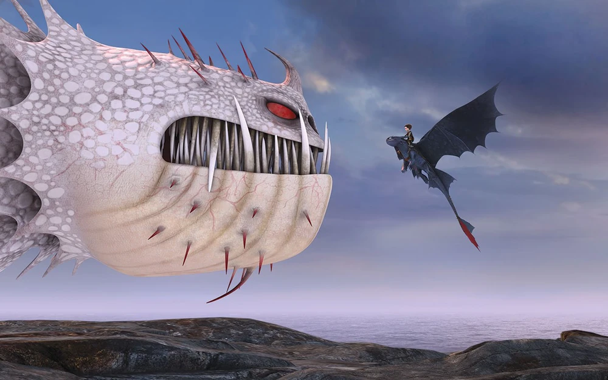
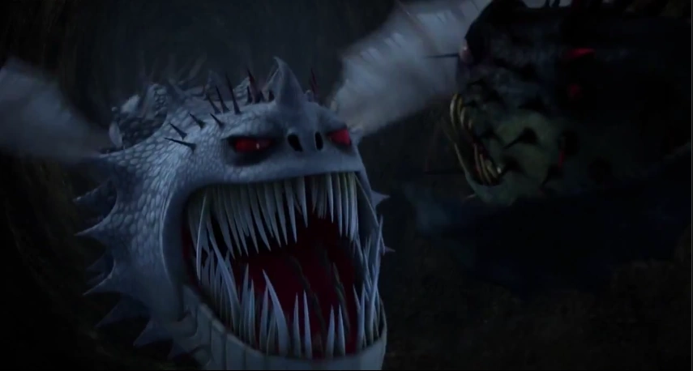
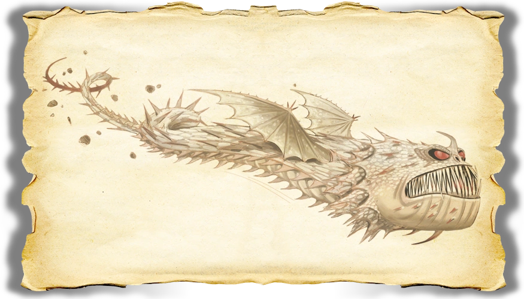
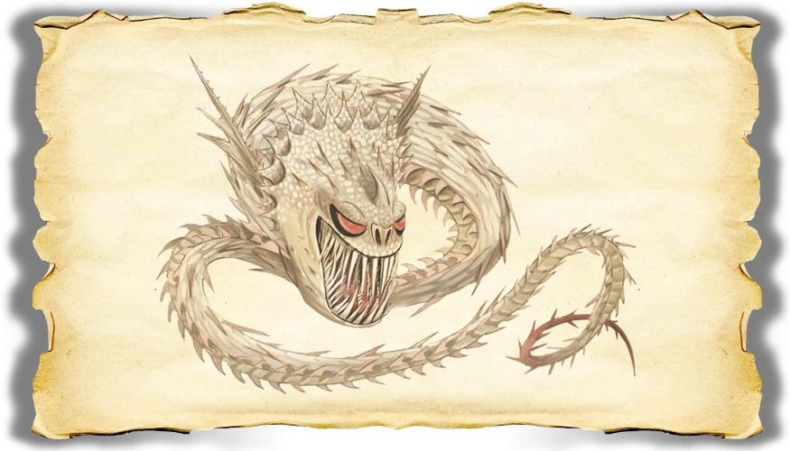
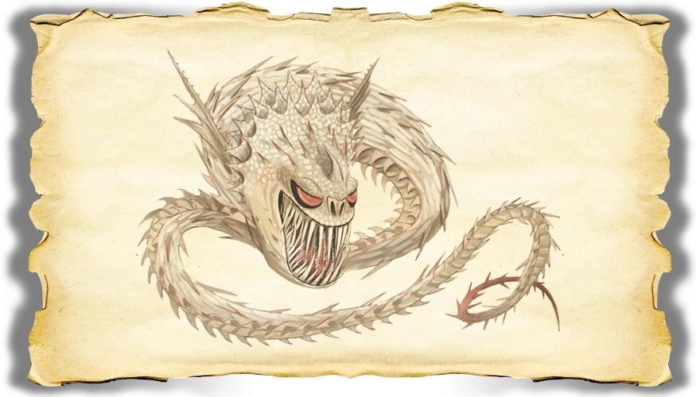

Home
Home
 About
About
 Dragons
Dragons
 Feedback
Feedback
 Sources
Sources
Boulder Class

First appearance:
All appearances:
Behaviour and personality:
Initially, the Screaming Death was violent and destructive, even to the point of destroying entire islands. It was later shown to be merely seeking its mother. After the reunion with her and his siblings, the Screaming Death became calmer than in previous times. A true family dragon.
They favour feeding on sea stacks, which results in decimating entire islands. They have strong homing instincts, thus holding strong bonds to certain locations.
Features:
Long snake-like body
Large chomping mouth
Rows of teeth
Small wings
Spiny frills along underbelly
Red spikes on head
Expandable spiny frill layers on neck
Rough scales
Abilities:
Spine shot
Disorienting shriek
Tunnelling
Multiple rounds of fireballs
Diet:
Fish
Mutton
Flowers
Yak
Sheep
Habitat:
Underground tunnels
Caves
Mountains
Size:
15,24 m (50 ft) [unrealistic/DreamWorks official measurement]
111,25 m (365 ft) [realistic/based on model sheet]
Wingspan:
3,05 m (10 ft)
Weight:
1134 kg (2500 lbs)
Fire Type:
Gatling concentric rings of fireballs, Spitting multiple fireballs in a single shot.
Weaknesses:
Scauldron's blast of hot water can rip the scales off.
Mommy dearest, will obey their mom.
Dragon Root.
Large size.
Trivia:
The name for the Screaming Death originated from Tuffnut after he heard the first giant scream from the dragon.
In some episodes, the Screaming Death has the same roar as the Red Death.
It was stated that the Screaming Death is "supposed to look like it evolved in a cave."
Fishlegs' Dragon Stats:
Attack: 16
Speed: 8
Armor: 20
Firepower: 10
Shot Limit: 2 rounds
Venom: 10
Jaw strength: 11
Stealth: 14
Gallery:
      
